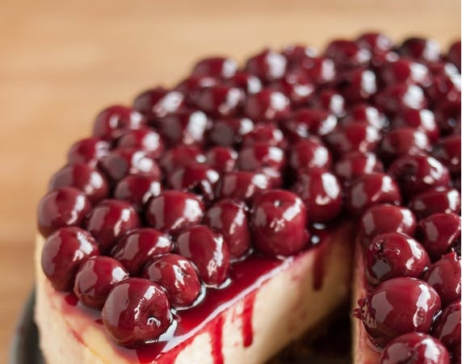
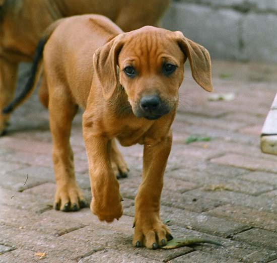
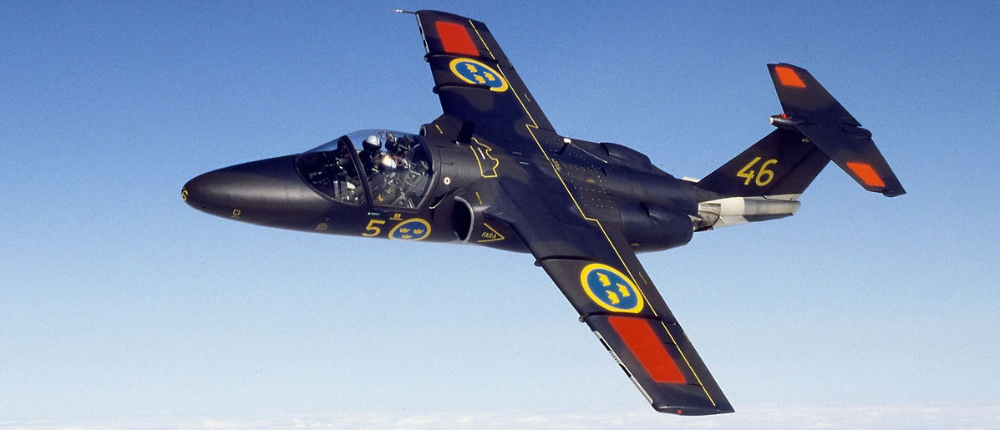

Exorcizamus te, omnis immundus spiritus
omnis satanica potestas, omnis incursio
infernalis adversarii, omnis legio,
omnis congregatio et secta diabolica.
Ergo draco maledicte
et omnis legio diabolica
adjuramus te.
Cessa decipere humanas creaturas,
eisque aeternae Perditionis venenum propinare.
Vade, Satana, inventor et magister
omnis fallaciae, hostis humanae salutis.
Humiliare sub potenti manu dei,
contremisce et effuge, invocato a
nobis sancto et terribili nomine,
quem inferi tremunt.
Ab insidiis diaboli, libera nos, Domine.
Ut Ecclesiam tuam secura tibi facias libertate servire
te rogamus, audi nos.
Ut inimicos sanctae Ecclesiae humiliare digneris,
te rogamus, audi nos.
Terribilis Deus de sanctuario suo.
Deus Israhel ipse truderit virtutem
et fortitudinem plebi Suae.
Benedictus deus. Gloria patri.
Cheesecake
Dessert
Johan Månsson

På svenska även kallad amerikansk ostkaka, är en dessert från USA som ursprungligt kommer från Italien (Cato den äldre), Frankrike (Guillaume Tirel) eller Tyskland. Kakan är baserad på grova kex som botten och färskost som fyllning och finns i många olika varianter. De vanligaste varianterna av cheesecake är vanilj, choklad och att tillsätta olika sorters bär såsom hallon. Även att tillsätta limefrukter är en av klassikerna.
Hund
Ridgeback
Johan Månsson

Rhodesian Ridgeback är en hundras från södra Afrika. Rasen anses vara besläktad med braquehundarna och har ursprungligen använts till storviltsjakt på lejon. Rasen främsta karaktärsdrag är den så kallade ridgen, en hårkam längs manken där pälsen växer mothårs.
Flygplan
Saab 105
Johan Månsson

Saab 105, även känd som Saab 105 Florette, är ett tvåmotorigt svenskt jetflygplan tillverkat av Saab, med svensk militär beteckning Sk 60 och österrikisk militär beteckning Saab 105 OE.Saab 105 flög för första gången den 29 juni 1963. Flygplanet är tvåmotorigt samt normalt tvåsitsigt då instruktör och elev sitter bredvid varandra. Den 17 juli 1967 påbörjade Flygvapnet jetutbildning på Sk 60, där den ersatte J 28C Vampire som skolflygplan typ II. Det används också av flygvapnets uppvisningsgrupp Team 60 vars specialmålade flygplan även används i flygskolans dagliga drift. Övriga användningsområden är bland annat väderflygning, sambandsflyg och målflyg.
Exorcizamus te, omnis immundus spiritus omnis satanica potestas, omnis incursio infernalis adversarii, omnis legio, omnis congregatio et secta diabolica. Ergo draco maledicte et omnis legio diabolica adjuramus te.